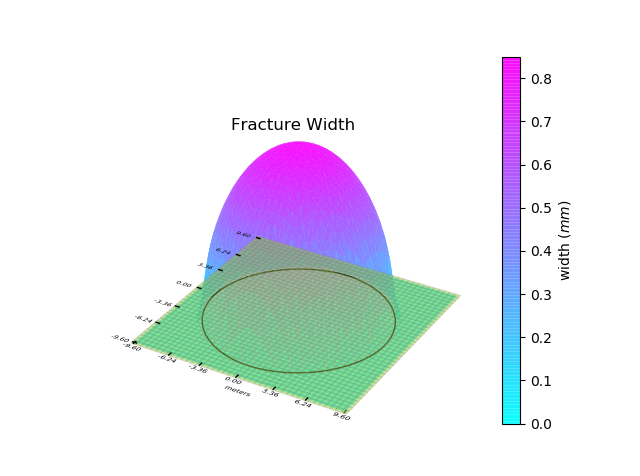
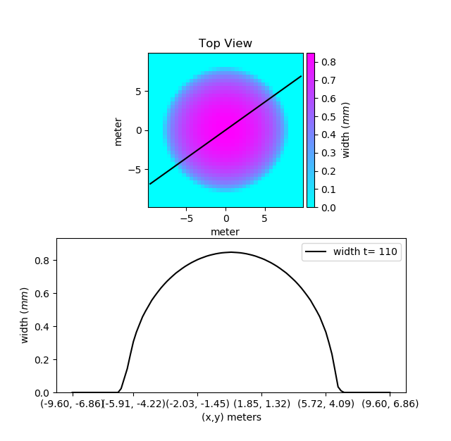

Post-processing and Visualization¶
A comprehensive set of post-processing and visualization routines are provided by PyFrac.
Plotting a Fracture¶
Let us start by visualizing the initial fracture in the Running a Simulation section. To plot the fracture, we can use the fracture.Fracture.plot_fracture() function provided by the Fracture class.
Fr.plot_fracture()
With the default options, this function plots the mesh, the footprint and the fracture width with 3D projection. The plot is interactive and can be zoomed in using the mouse wheel.
{kind=link}
You can also provide the quantity you want to plot. The following quantities can be plotted:
supported variables |
|---|
‘w’ or ‘width’ |
‘pf’ or ‘fluid pressure’ |
‘pn’ or ‘net pressure’ |
‘v’ or ‘front velocity’ |
‘Re’ or ‘Reynolds number’ |
‘ff’ or ‘fluid flux’ |
‘fv’ or ‘fluid velocity’ |
‘lk’ or ‘leak off’ |
‘mesh’ |
‘footprint’ |
Note
The variables ‘Reynolds number’, ‘fluid flux’ and ‘fluid velocity’ are not saved by default in the results. Their saving can be enabled using simulation properties. See properties.SimulationProperties for details.
For example, to plot fracture footprint in 2D projection, we can do the following:
Fig = Fr.plot_fracture(variable='mesh', projection='2D')
Fig = Fr.plot_fracture(variable='footprint', fig=Fig, projection='2D')
The first instruction will plot mesh of the Fracture and will return a Figure object. We can use the same figure to plot the footprint. In this case, it will be superimposed on the first plot. The variables can also be plotted as a colormap or contours. Let us plot the width of the our fracture in the form of a colormap. We can also superimpose contours on it.
Fig = Fr.plot_fracture(variable='width', projection='2D_clrmap')
Fig = Fr.plot_fracture(variable='width', fig=Fig, projection='2D_contours')
Let us also superimpose fracture footprint to know where the fracture front is located. The color of the front line can be changed to distinguish it from the contour lines. This can be done by giving it customized plot properties.
from properties import PlotProperties
plot_properties = PlotProperties(line_color='tomato')
Fig = Fr.plot_fracture(variable='footprint', fig=Fig, projection='2D', plot_prop=plot_properties)
{kind=link}
The above example shows only some basic functionality. For a complete list of available options, see the documentation of the fracture.Fracture.plot_fracture() function.
Apart from plotting the whole fracture, you can also plot a slice of the fracture using the fracture.Fracture.plot_fracture_slice() function. It plots a slice of the domain defined by two given points. let us plot a slice of our mesh passing from the two points (-7, -5) and (7, 5).
Fr.plot_fracture_slice(variable='width', point1=[-7, -5], point2=[7, 5])
By default, it will be plotted in 2D projection, but 3D projection can also be plotted.
{kind=link}
If you want to have more control on your plots, you can use the underlying functions that are used by the fracture.Fracture.plot_fracture() function. Worth mentioning among them are the visualization.plot_fracture_variable_as_image(), visualization.plot_fracture_variable_as_contours() and visualization.plot_variable_vs_time(). To use these functions, you can load a fracture variable using postprocess_fracture.get_fracture_variable() function. See the documentation for more details.
Plotting Fracture Evolution¶
The first step to visualize the fracture evolution is to load the fracture objects at different times from a stored simulation run. postprocess_fracture.load_fractures() function will do that for you. You can provide the times at which the state of fracture is to be loaded. The function will return a list of Fracture objects closest to the times given in the time series. It will also return the properties used in the simulation in the form of a tuple consisting of solid, fluid, injection and simulation properties in order. Note that for a time given in the time series, the fracture with the closest and larger time will be returned. Let us load the results from the simulation ran in the Running a Simulation section:
from postprocess_fracture import load_fractures
Fr_list, properties = load_fractures(sim_name='radial')
Note that we have not provided any time series. In this case, all of the fractures will be loaded. Also, since we have not provided any disk address, the results will be loaded from the default folder. If multiple simulations with the same simulation name are found, the most recent run will be loaded. Now let us plot the evolution of the fracture radius of the loaded fractures. We can use the visualization.plot_fracture_list() to do that.
from properties import PlotProperties
from visualization import plot_fracture_list
plot_prop = PlotProperties(line_style='.', graph_scaling='loglog')
Fig_R = plot_fracture_list(Fr_list,
variable='d_mean',
plot_prop=plot_prop)
The above instructions will instantiate a properties.PlotProperties class object that can be used to specify the properties that are to be used to plot the given variable. The variable ‘d_mean’ here specifies the minimum distance of the front from the injection point. Below is the list of variables that can be plotted.
supported variables |
|---|
‘w’ or ‘width’ |
‘pf’ or ‘fluid pressure’ |
‘pn’ or ‘net pressure’ |
‘v’ or ‘front velocity’ |
‘d_min’ or ‘front_dist_min’ |
‘d_max’ or ‘front_dist_max’ |
‘d_mean’ or ‘front_dist_mean’ |
‘V’ or ‘volume’ |
‘lk’ or ‘leak off’ |
‘lkt’ or ‘leaked off total’ |
‘ar’ or ‘aspect ratio’ |
‘ef’ or ‘efficiency’ |
‘Re’ or ‘Reynolds number’ |
‘ff’ or ‘fluid flux’ |
‘fv’ or ‘fluid velocity’ |
‘mesh’ |
‘footprint’ |
Note
The variables ‘Reynolds number’, ‘fluid flux’ and ‘fluid velocity’ are not saved by default in the results. Their saving can be enabled using simulation properties. See properties.SimulationProperties for details.
PyFrac provides the capability to plot analytical solutions available in a number of limiting regimes. Let us compare the fracture radius we have to a fracture propagating in a toughness dominated regime.
from postprocess_fracture import get_fracture_variable
from visualization import plot_analytical_solution
time_srs = get_fracture_variable(Fr_list, variable='time')
Fig_R = plot_analytical_solution(regime='M',
variable='d_mean',
mat_prop=Solid,
inj_prop=Injection,
fluid_prop=Fluid,
time_srs=time_srs,
fig=Fig_R)
The function postprocess_fracture.get_fracture_variable() provides a list of the values of the required variable. Here, we have used it to get a list of times at which the solution is available in the fracture list. This list, along with the material, fluid and injection properties are then given to the visualization.plot_analytical_solution() function to plot the analytical solution at the given times. Just like the case of a single fracture, the evolution of a fracture along a slice of the domain can also be plotted. Let us plot the fracture width evolution along a vertical slice passing through the injection point. Unlike the previous example where the solution was interpolated between the evaluated solution on the line joining the two given points, here we will plot the discrete values of the solution evaluated at the cell centers. This can be done by enabling the plot_cell_center argument. Below, we plot the width at cell centers along the vertical line passing through the center of the cell containing our point.
from visualization import plot_fracture_list_slice
import numpy as np
time_srs = np.geomspace(4e-3, 1, 5)
Fr_list, properties = load_fractures(sim_name="radial", time_srs=time_srs)
# plot slice
ext_pnts = np.empty((2, 2), dtype=np.float64)
Fig_WS = plot_fracture_list_slice(Fr_list,
variable='w',
projection='2D',
point1=[0., 0.],
orientation='vertical',
plot_cell_center=True,
extreme_points=ext_pnts)
In the above code, we first load the state of the fracture at five equidistant times in geometric space. The fracture list is then passed to the visualization.plot_fracture_list_slice() which plots the slice of the domain passing through the given point. To compare the solution, we can also plot slice of the analytical solution. We have passed an empty array to the slice plotting function which will be written by the extreme points on the mesh along the slice, which can be used to plot the analytical solution slice.
from visualization import plot_analytical_solution_slice
time_srs_loaded = get_fracture_variable(Fr_list, variable='time')
Fig_WS = plot_analytical_solution_slice('M',
'w',
Solid,
Injection,
fluid_prop=Fluid,
fig=Fig_WS,
time_srs=time_srs_loaded,
point1=ext_pnts[0],
point2=ext_pnts[1])
Finally, in addition to the slice, solution at a single point can also be plotted using the visualization.plot_fracture_list_at_point() function. See the documention of the functions for details.
Exporting selected data to JSON¶
- You can export the data to one or more JSON files (JavaScript Object Notation) and then post-process them via other programs e.g. Wolfram Mathematica. The function
append_to_json_file()is used for both creating and adding data to the file. The function behaves differently in the case the JSON file exists or not. In the latter case, it creates a Python dictionary while in the former case it will be imported from the file. Currently, the imported dictionary is obscure to the user i.e. the function provides to the user only a way to write to JSON and not to read what is saved in it. Think to the function as a tool to create a Python dictionary that will be “the box” where to store and organize data using the labels you decide (keys). The function requires a minimum number of 3 to 4 arguments depending on what you decide to do: In the case you have a python dictionary that you would like to dump to a new file, the function
append_to_json_file()requires at least 3 arguments: the filename, the data to be written (a python dictionary) and the operation to be done, that is ‘dump_this_dictionary’.the same 3 arguments must be provided in the case you want to extend an exixting JSON file with a python dictionary: the filename, the data to be written (a python dictionary) and the operation to be done, that is ‘extend_dictionary’.
Regardless whether the JSON file exists or not, you can dump a key of a dictionary and the associated list of data. If the file does not yet exist the function creates the file and makes the related dictionary containing the key and the data. You should provide to the function at least these 4 arguments: the filename, the data to be written and the operation to be done - i.e. ‘append2keyASnewlist’ - along with the key. This case apply also if you want to substitute the content of an existing key by creating a new list containing both, the current list associated with the key and a new list.
the same 4 arguments must be provided in case you want to append the content of a list to an existing one (associated with an existing key). In that case, you should provide the filename, the data to be written and the operation to be done - i.e. ‘append2keyAND2list’ - along with the key.
In the following example, we export to a JSON file the list of times at which the solution has been computed and saved (‘time_srs’). We decided to call the associated key as ‘append2keyASnewlist’.
from postprocess_fracture import append_to_json_file
myJsonName='./path/and/name/of/my/jsonfile.json'
Fr_list, properties = load_fractures(address='path/to/the/directory/with/the/results')
Solid, Fluid, Injection, simulProp = properties
time_srs = get_fracture_variable(Fr_list,variable='time')
append_to_json_file(myJsonName, time_srs,
'append2keyASnewlist',
key='time_srs_of_Fr_list',
delete_existing_filename=True)
The following piece of code can follow the previous one. Here we are interested in saving the fracture opening ‘w’ as a function of time at a specific point (coordinates x=-0.02 m and y=0.0 m).
from postprocess_fracture import get_fracture_variable_at_point
wATpointA, time = get_fracture_variable_at_point(Fr_list, variable='w', point=[-0.02, 0])
append_to_json_file(myJsonName, wATpointA, 'append2keyASnewlist', key='wATpointA')
append_to_json_file(myJsonName, time, 'append2keyASnewlist', key='t')
The function append_to_json_file() by default does not remove the existing JSON file. A new file is created if it does not exist, otherwise, it is extended with the provided data. In the case of the example above, the option ‘delete_existing_filename=True’ make sure that the data is dumped to a new file by deleting the existing one. Thus in this case the function creates a new python dictionary with one key and the associated list before dumping the dictionary to the file.
Note that at each call to the function append_to_json_file(), the existing JSON file is loaded, extended and finally the file is rewritten. Thus if you are dealing with large files, we suggest preparing a python dictionary and dump it to the file at the end with a single call the function. Another option is to split the data between more files.
The following example is more advanced. By adding the argument ‘export2Json=True’ when calling it, the function plot_fracture_list_slice() returns a dictionary that contains the numerical data used to create the corresponding plot. We then create a dictionary under the name ‘towrite’ and we merge it to the existing JSON file.
from postprocess_fracture import append_to_json_file
from visualization import plot_fracture_list_slice
########## TAKE A VERTICAL SECTION (along y axis) TO GET w AT THE MIDDLE ########
ext_pnts = np.empty((2, 2), dtype=np.float64)
print("\n 8) getting the slice along the y axis to get w(y)... ")
fracture_list_slice = plot_fracture_list_slice(Fr_list,
variable='w',
projection='2D',
plot_cell_center=True,
extreme_points=ext_pnts,
orientation='vertical',
point1=[-0.0007,-0.008],
point2=[-0.0007,0.008], export2Json=True)
towrite = {'intersectionVslice':fracture_list_slice}
append_to_json_file(myJsonName, towrite, 'extend_dictionary')
In the script above, “fracture_list_slice” contains a list of coordinates ad a series of lists containing the fracture opening “w” at the same locations but at different times (provided by “Fr_list”). If you are using any kind of remeshing, the mesh will change. This means that, before and after the remeshing, the locations where you get the fracture opening “w” along your slice are different. Thus you must provide the option “export2Json_assuming_no_remeshing=False” as in the script below. This option will make sure that for each time you will export a list of coordinates with the location of the points in the mesh where you get the values of “w”.
from postprocess_fracture import append_to_json_file
from visualization import plot_fracture_list_slice
########## TAKE A VERTICAL SECTION (along y axis) TO GET w AT THE MIDDLE ########
ext_pnts = np.empty((2, 2), dtype=np.float64)
print("\n 8) getting the slice along the y axis to get w(y)... ")
fracture_list_slice = plot_fracture_list_slice(Fr_list,
variable='w',
projection='2D',
plot_cell_center=True,
extreme_points=ext_pnts,
orientation='vertical',
point1=[-0.0007,-0.008],
point2=[-0.0007,0.008],
export2Json=True,
export2Json_assuming_no_remeshing=False)
towrite = {'intersectionVslice':fracture_list_slice}
append_to_json_file(myJsonName, towrite, 'extend_dictionary')
In the following example we create a dictionary and then we save it to a JSON file under the key ‘complete_footrints’. Note that in this case we are building a structure made of nested dictionaries. This example allows you to export the coordinates of the points defining the fracture front in each cell of the mesh (‘fracture.Ffront’) and for each time of the simulation.
from postprocess_fracture import append_to_json_file
fracture_fronts = []
numberof_fronts = []
for fracture in Fr_list:
fracture_fronts.append(np.ndarray.tolist(fracture.Ffront))
numberof_fronts.append(fracture.number_of_fronts)
complete_footprints = {'time_srs_of_Fr_list': time_srs_COMPLETE,
'Fr_list': fracture_fronts,
'Number_of_fronts': numberof_fronts
}
append_to_json_file(myJsonName,
complete_footprints,
'append2keyASnewlist',
key='complete_footrints',
delete_existing_filename=True)